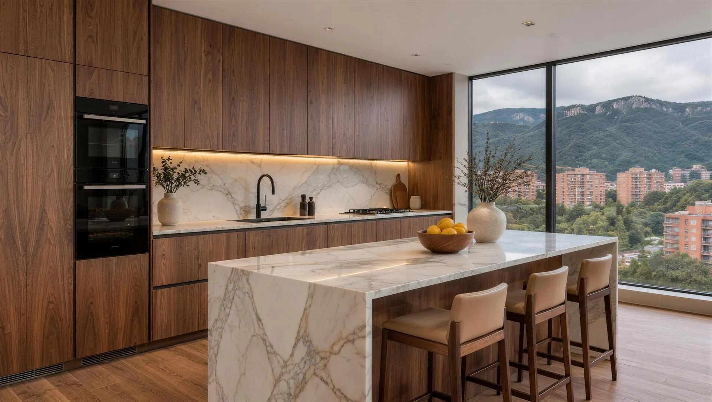
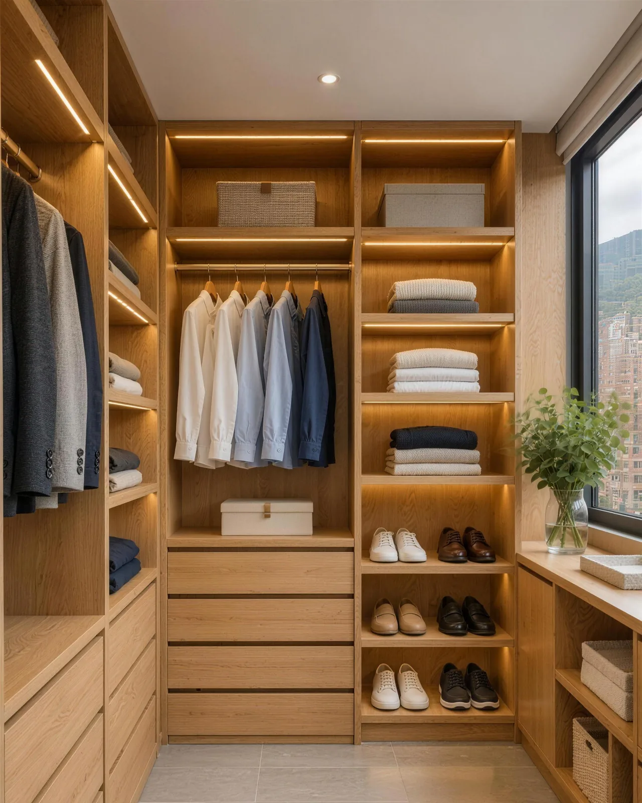
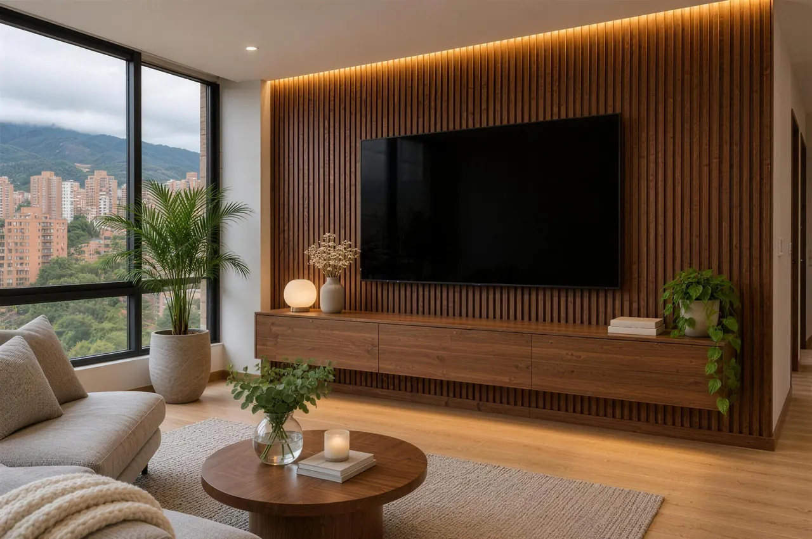
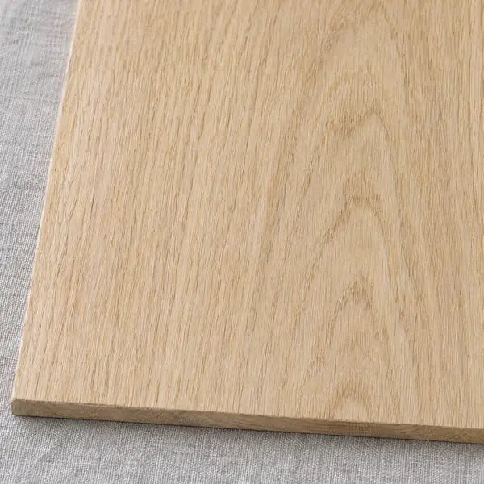
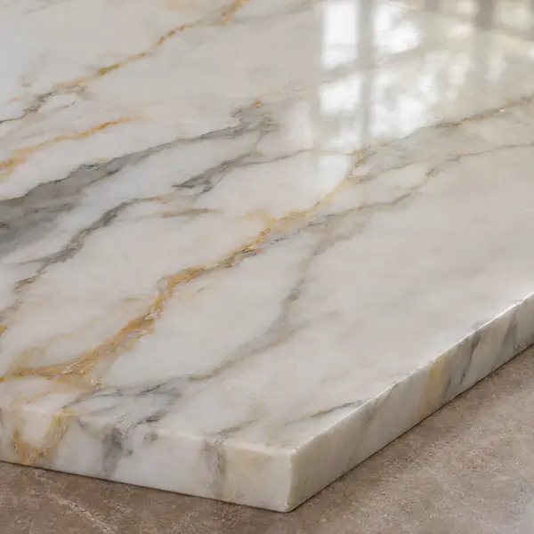
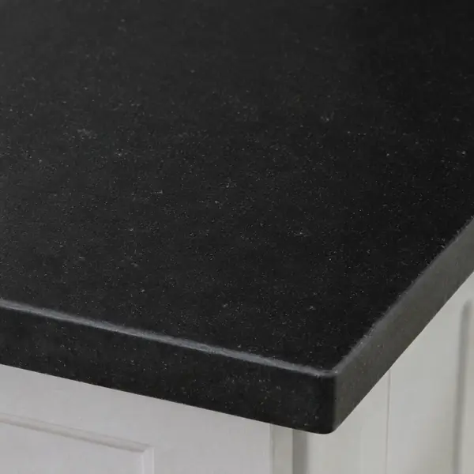
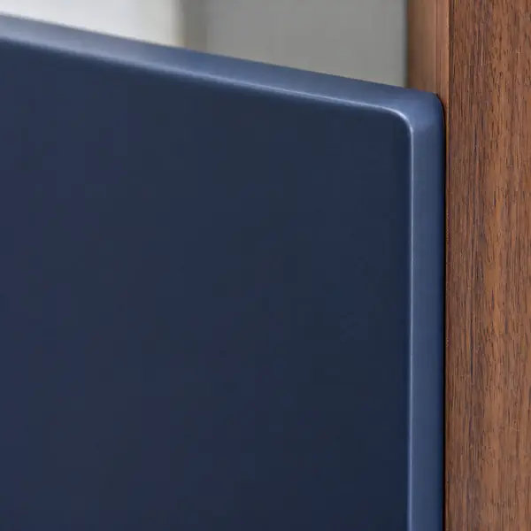
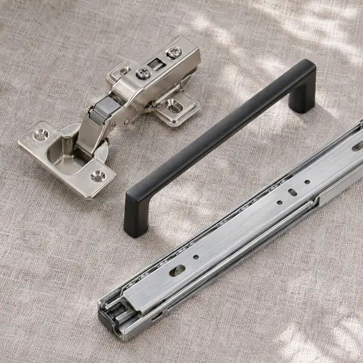

Nogal
Chapilla natural de tono cálido para cocinas, puertas y paneles.


Cocinas, clósets, puertas y muebles de baño en chapilla natural y piedra, para apartamentos del norte de Bogotá. Diseñamos, fabricamos e instalamos. Cocinas desde $14.000.000 · visita gratis.
Medimos dos veces y cortamos una. Cada mueble sale de un plano hecho para tu apartamento.
Cocinas, clósets, puertas y baños a la medida para apartamentos en Bogotá. Cocinas desde $14.000.000. Visita y medidas gratis.
años haciendo carpintería y acabados en Bogotá
de garantía en todos los trabajos y cambio de herrajes
Servicios
Un solo equipo se encarga del diseño, la fabricación y la instalación. Tú hablas con una persona de principio a fin.
Cocinas integrales a la medida del espacio, con mesones en piedra y muebles en chapilla o lacado.
Módulos pensados para lo que guardas: colgar, doblar, zapatos y cajones con cierre lento.

Puertas y marcos en madera, con herrajes ocultos.

Muebles de baño, mesones y enchapes.

Centros de entretenimiento, paneles de listones, escritorios y bibliotecas.
Precios con IVA incluido. El valor final depende de las medidas y los materiales; te lo damos por escrito después de la visita.
Cómo trabajamos
Cada proyecto empieza como una línea en un plano. Baja para ver cómo esa línea se vuelve una cocina terminada.


 01 Medimos y dibujamos
01 Medimos y dibujamosVisitamos el apartamento sin costo, tomamos medidas y dibujamos el plano de cada mueble. En máximo 7 días hábiles te enviamos la cotización por escrito.
Cada pieza se corta y se marca según el plano. Así llega a la obra lista para armar.
Armamos, nivelamos y ajustamos puertas y cajones en el apartamento, con el piso protegido.
Revisamos cada detalle contigo y te dejamos el espacio limpio, listo para usar.
Proyectos
Cocinas, clósets, puertas, baños y muebles para apartamentos en Bogotá.
Una obra de Andok: muebles en nogal de piso a techo, torre para horno y nevera, y una isla con mesón blanco y costados en la misma madera.

Materiales
Te mostramos las muestras en la visita para que elijas con el material en la mano.
Chapilla natural de tono cálido para cocinas, puertas y paneles.

Chapilla clara de veta recta para clósets, estudios y vestieres.

Mesones e islas con veta suave. Se sella para la cocina diaria.

Mesón resistente al calor y a los golpes, de acabado mate.

Puertas en color liso, como el azul Andino, con canto redondeado.

Bisagras y correderas con cierre lento, y manijas discretas.
Cotización por proyecto
Cuéntanos qué quieres hacer y en qué barrio queda el apartamento. Te respondemos por WhatsApp el mismo día hábil y agendamos la visita gratis para medir.
También por correo: andokcarpinteria@gmail.com